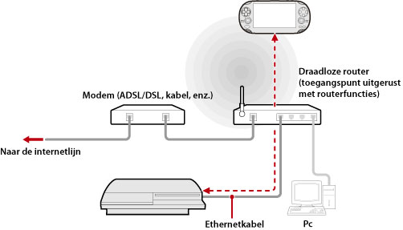

Netwerk > Remote-play gebruiken (via een toegangspunt)
Remote-play gebruiken (via een toegangspunt)
Sluit het PS3™-systeem aan op een toegangspunt met behulp van een ethernetkabel. Gebruik de functie voor draadloos LAN van een apparaat dat Remote-play ondersteunt, zoals een PS Vita-systeem of een PSP™-systeem, om verbinding te maken met het PS3™-systeem via het toegangspunt.
Voorbeeld van een gewone configuratie

Opmerkingen
- Een draadloze router is een apparaat dat de functies van een toegangspunt aan een router toevoegt. Een toegangspunt is een apparaat dat toelaat om een draadloze verbinding met een netwerk te maken. Een router is een apparaat gebruikt bij het delen van een internetverbinding met meerdere apparaten.
- Een modem kan zijn uitgerust met de routerfuncties. Sluit het PS3™-systeem aan op een apparaat dat is uitgerust met routerfuncties.
- Als het toegangspunt en de modem beide uitgerust zijn met routerfuncties, schakelt u de routerfuncties van één van beide apparaten uit. Het PS3™-systeem en het apparaat dat remote-play ondersteunt, moeten op hetzelfde netwerk aangesloten zijn. Als twee of meer routers tegelijkertijd worden gebruikt, kunnen het PS3™-systeem en het apparaat worden verbonden met aparte netwerken en kunt u remote-play mogelijk niet gebruiken.
Voorbereiden voor gebruik (PS3™-systeem en het apparaat dat remote-play ondersteunt)
Wanneer u Remote-play voor het eerst gebruikt, moet u het apparaat dat Remote-play ondersteunt, zoals een PS Vita-systeem-systeem of een PSP™-systeem, registreren (koppelen) aan het PS3™-systeem. Om het apparaat te registeren (koppelen), selecteert u  (Instellingen) >
(Instellingen) >  (Remote-Play-instellingen) > [Apparaat registreren].
(Remote-Play-instellingen) > [Apparaat registreren].
Voorbereiden voor gebruik (apparaat dat remote-play ondersteunt)
Maak een netwerkverbinding om het apparaat te verbinden met een toegangspunt. Als er al een netwerkverbinding opgeslagen is voor het apparaat, hoeft u geen nieuwe verbinding aan te maken. Raadpleeg de gebruikershandleiding van het apparaat voor meer informatie over het maken van een netwerkverbinding op het apparaat.
Remote-play gebruiken op een PS Vita-systeem
1. |
Tik op uw PS Vita-systeem op |
|---|
 (PS3 Remote-play) > [Start].
(PS3 Remote-play) > [Start].2. |
Selecteer |
|---|
 (Netwerk) >
(Netwerk) >  (Remote-play) op het PS3™-systeem.
(Remote-play) op het PS3™-systeem. 3. |
Tik op uw PS Vita-systeem op [Verbind via privénetwerk]. |
|---|
Remote-play gebruiken op een PSP™-systeem
1. |
Selecteer |
|---|---|
2. |
Selecteer |
3. |
Selecteer [Verbind via privénetwerk]. |
4. |
Selecteer de verbinding voor het te gebruiken toegangspunt voor Remote-play uit de lijst met verbindingen. |
 (Remote-play) op het PSP™-systeem.
(Remote-play) op het PSP™-systeem.Opmerkingen
- Remote-play kan worden gebruikt binnen het signaalbereik van het toegangspunt.
- Als u de instelling voor remote-start inschakelt op uw PS3™-systeem, dan kunt u uw systeem instellen zodat het automatisch wordt ingeschakeld (Wake-on LAN). Meer informatie vindt u bij (Instellingen) > (Remote-Play-instellingen) > [Remote-start] in deze handleiding.
- Als u tijdens Remote-play naar het scherm van een andere applicatie gaat, wordt de verbinding voor Remote-play na 30 seconden gesloten.